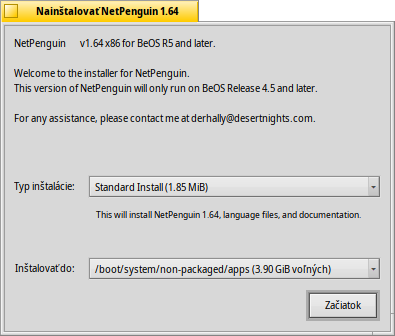
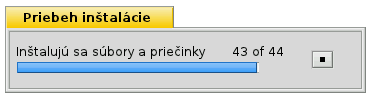

Slovenčina
Slovenčina Français
Français Deutsch
Deutsch Italiano
Italiano Русский
Русский Español
Español Svenska
Svenska 日本語
日本語 Українська
Українська 中文 ［中文］
中文 ［中文］ Português
Português Suomi
Suomi English
EnglishThe translation of this page isn't yet complete. Until it is, unfinished parts use the English original.
 PackageInstaller
PackageInstaller
| Deskbar: | No entry, normally launched via double-clicking a supported file. | |
| Location: | /boot/system/apps/PackageInstaller | |
| Settings: | none |
This page is currently only a first draft. Please check back later for a refined version.
PackageInstaller is a software installer for BeOS packages in PKG format. It provides an easy-to-use GUI that helps in fast package installation in Haiku.
It is being executed automatically when you try to open files with .pkg extension.
The main window gives access to two configurations:
- type of installation (depending on the developer there might be more than one (standard) installation option).
- Installation location (only entire partitions/hard disks can be chosen, not custom paths)
After clicking Install the extraction and installation process will begin.
At this point warnings and errors can appear saying which libraries and dependencies are missing in order to run the program. It might be required to install these packages before attempting to install desired program.
When the installation is complete, package should appear in the Deskbar applications menu.